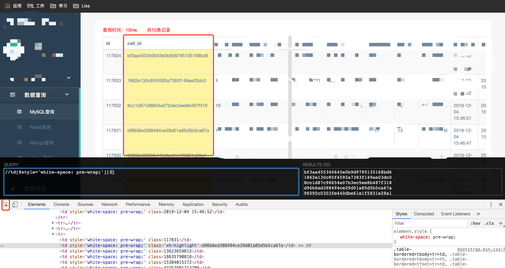

Chrome XPath Helper插件安装地址:
https://chrome.google.com/webstore/detail/xpath-helper/hgimnogjllphhhkhlmebbmlgjoejdpjl
需求1
获取表格第二列数据
具体方法
打开XPath Helper,并打开chrome检查元素,使用select an element in the page to inspect it选择想要获取的元素值,
然后在XPath Helper里输入表达式:
//td[@style='white-space: pre-wrap;'][2]
上面表达式的意思是获取标签为td且style为white-space: pre-wrap;的所有元素,
由于获取的是表格中第二列的数据,所以取数组中的第二个元素.结果如下:
